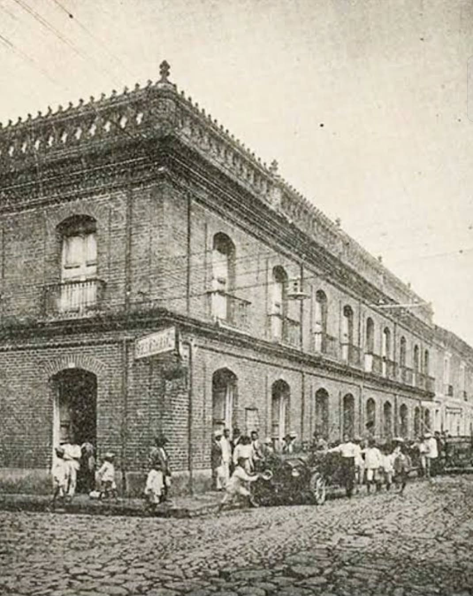

La Institución Educativa Académica ofrece educación de calidad desde preescolar hasta grado 11, con énfasis en excelencia académica, valores y preparación para la vida universitaria.
Estudiantes activos
Años de trayectoria
Tasa de graduación
Docentes titulados

Comprometidos con los más altos estándares académicos y éticos en cada proceso educativo.
Valoramos la diversidad y garantizamos igualdad de oportunidades para toda la comunidad.
Integramos tecnología y metodologías activas para preparar ciudadanos del siglo XXI.
Formamos personas íntegras, conscientes de su rol en la sociedad y el medio ambiente.
Ofrecemos educación completa desde preescolar hasta grado 11 con énfasis en ciencias, humanidades y formación técnica especializada.
Formación integral temprana con enfoque en desarrollo cognitivo, emocional y social del niño.
Cimientos académicos sólidos con metodologías activas, lectura crítica y pensamiento lógico-matemático.
Profundización en ciencias, humanidades, arte y tecnología con proyectos interdisciplinarios.
Contamos con formaciones técnicas de alta calidad orientadas al éxito profesional y laboral:
Complete el formulario para iniciar su proceso de inscripción o solicitar más información. Nos comunicaremos contigo en menos de 24 horas.
Visítanos, llámanos o escríbenos. Con gusto resolveremos todas tus inquietudes.
Guadalajara de Buga
Valle del Cauca, Colombia
+57 318 629 6926
¡Escríbenos aquí!
ieacademicobuga@gmail.com
Atención institucional
Facebook:
IE Academico
Lunes a Viernes
7:00 am - 5:00 pm